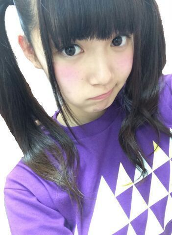
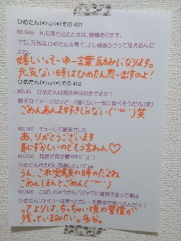

| 2014/06 07 Sat | ひめたん-OoO-その449 |
ゆったんからは
えくぼひめと呼ばれています
どもーんひめたんです( ´ ▽ ` )ノ

ひめたんが高いツインやっても
あんま違和感ないーって言われた
なんでー／(^o^)＼／(^o^)＼／(^o^)＼
ゆーて実はちょっと嬉しい／(^o^)＼
さて、告知させてください！
◎次回の乃木のの出ます！
ずーさん (高山一実ちゃん)
せいたん (畠中清羅ちゃん)と一緒です
時間帯としてはプリンシパル公演真っ最中ですが
お留守番ちーむで放送圏にお住まいの方は
よかったら聞いてみてくださいねー♪
◎本日6月6日はTopYell発売日！
かなりん (中田花奈ちゃん)
ろってぃ (川村真洋ちゃん)と一緒です
ちょっと前にお話したけど
ダンスについて語ってきましたよー
よろしくね☆
◎Cool up Girls 取材していただきました！
あすかりん (齋藤飛鳥ちゃん)とふたり
最近仲良すぎるわね私たち。
発売日近くなったらまたお知らせさせてくださいな

いこたん (生駒里奈ちゃん)
今日までよく頑張ったね(＊´ω`＊)
いこたんにはメンバーみんなついてるからね！
それから、 真夏さん (秋元真夏ちゃん)！
釣りがお得意で走るのが遅、くてあざとくて
器用なんだか不器用なんだかよくわかんない
いや手先は器用なんだけど
なんなら頭もいいけど
もひとつ言うと優しいけど
まなったんびーむとかゆってるみたいで
ひめたんおこ(うそ)だけどほんとは大好きな
まなつさーん！
あざといは褒め言葉です←
あなたも大概いじられてますけどね？
わかってて言ってるんだろうけどんふふ
でもほんとにありがとーね真夏さん
ブログ見たよ（ ; ; ）
ひめたんも真夏さんらぶなのです
そして ゆったん (斉藤優里ちゃん)も
ブログ見たよー（ ; ; ）
ゆったんはいつもいつも
めーちゃん大丈夫よーって
ひめたんのこと励ましてくれるの
このプリンシパル期間の間に
さらに好きになりました///
ゆったんおめー（ ; ; ）
あれ、冒頭との矛盾が生まれた気がする←
えくぼひめって呼ばれたり
めーちゃんって呼ばれたり
うん、めーちゃんのが多いかな。笑
さゆりんごも 川後さんも せいたんも さゆにゃんも
とまとも るんるんも ろってぃも
みんなみーんなありがとう！
玲香は昨日2幕の間ずーっと励ましてくれてて
一緒にがんばろうって言ってくれて
そしたら今日 本役選ばれて！
やーほんとに嬉しかった
おめでとう（ ; ; ）
きいちゃんもかりんちゃんもおめでとう（ ; ; ）

 CDプレイヤーを壊しちゃった！
CDプレイヤーを壊しちゃった！
さてひめたんならどうするぅー？
私、躊躇なく捨てられるタイプの人なのです
お店に持ってって修理してもらうみたいな概念が
私にはないみたいです。だって面倒じゃーん
そろそろ夏になってエアコンとか
電気代かかるようになるけど、
ひめたんビーム(<・ω・>)は電気代かかるの？
ひめたんにはコンセントないよー
省エネですねーひめたんびーむは地球にも優しい
あれ、何言ってんだろ
こんど友達とチョコフォンデュやろうと
思うんですけど具材が決まりません！
バナナ マシュマロ パイン ひめたん以外に
おすすめありますか？
ひめたんは美味しいと思うよー♪
えーなんだろ
ひめたんあんましチョコフォンデュ
やったことないからなー
ひめたんは夏はクーラー派？扇風機派？
それともドライアイス派？
そっれっとっもっ、コンクリートに寝そべる派？
コンクリート((((；゜Д゜))))ガクガクブルブル
クーラーの人工的な風はちょっと苦手です
扇風機が好き。でも喉乾燥するよねー
猫が６匹赤ちゃん産みました。
名前を1匹に付けてください
◎ツナマヨ
◎ねこりーぬさん
◎マーガレット
気に入ったのがあればどうぞ
日本って何アジアか知ってますか？
ばかにしないで！
東アジアですよ！
それくらいの常識はあるお(＾ω＾)
まんじゅうは、ひめたん怖い？
私がおまんじゅうとでも言いたいのかしら(＾ω＾)
熱くなってきたけどひめたんは
かき氷とアイスクリームどっち派？？
アイスクリーム(＾ω＾)
ひめたんの日記の
コメント欄下２ケタに46を踏んだ方へ
手書きでコメ返するコーナー
＼ ひめたん46 ／

いつもたくさんのコメント
ありがとうございます
メールの返信コメントや
16人のプリンシパルtrois公式サイトの
応援コメントもたくさんありがとうございます
ぜーんぶよーんでーるよーありがとね♪
明日終わればやっと折り返しかな？
(＊´・ω・＊)
コメント(672)
2014/06/07 00:12